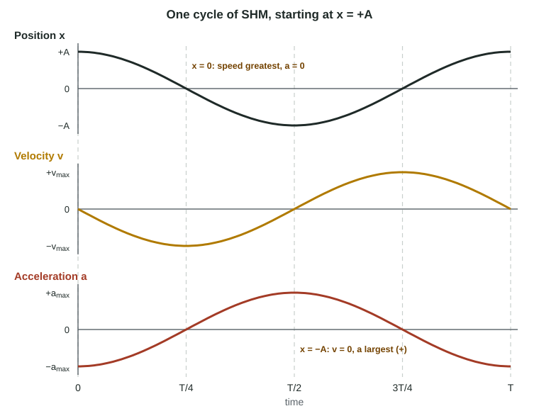

Simple harmonic motion has a shape. Plot the position of a mass on a spring against time and you get a smooth, repeating curve: a sine or cosine. This page shows how to read that curve, how to write its equation, and how the position, velocity and acceleration graphs fit together. These graph skills are tested in both multiple choice and free response.
The equation of motion
If an object in SHM starts at x = +A at t = 0 (released from rest at the end), its position is
x = A cos(2πft)
If it starts at x = 0 moving in the + direction, its position is
x = A sin(2πft)
Both are on the equations sheet. A is the amplitude and f = 1/T is the frequency. The quantity 2πft is an angle in radians: after one period, t = T, it equals 2π, one full cycle. Set your calculator to radian mode before you substitute, or every answer will be wrong.
Worked example 1. A block starts at x = +0.10 m and oscillates with period 2.0 s. Where is it at t = 0.25 s?
It starts at +A, so x = A cos(2πft), with f = 1/T = 0.50 Hz.
2πft = 2π(0.50 Hz)(0.25 s) = π/4 rad = 0.785 rad.
x = (0.10 m) cos(0.785) = (0.10 m)(0.707) = 0.071 m.
Check: after one eighth of a period the block has moved only 0.029 m from its start, less than a third of the way to equilibrium. It starts slowly from rest and speeds up.
Reading the position graph
On a graph of x against t for SHM:
- The amplitude is the height of a peak above the center line (x = 0).
- The period is the time from one peak to the next (or between any two matching points one full cycle apart). Half a period takes the object from one end to the other.
- The slope at any instant is the velocity. Flat at a peak or trough means v = 0: a turning point. Steepest at a zero crossing means top speed at equilibrium.
Position, velocity and acceleration together

Look down any vertical line in the figure. Each graph follows from the one above it.
- The velocity graph is the slope of the position graph. It is zero at 0, T/2 and T (the turning points) and has its largest size at T/4 and 3T/4, where x = 0.
- The acceleration graph comes from the force: a = F/m = −(k/m)x. So the acceleration graph is the position graph flipped upside down. When x is largest and positive, a is largest and negative.
| Position | Speed | Size of acceleration (and net force) |
|---|---|---|
| x = +A or −A (turning points) | zero | largest, pointing toward x = 0 |
| x = 0 (equilibrium) | largest | zero |
| in between | in between | in between, toward x = 0 |
The classic error is to put the largest speed where the force is largest. Force sets the acceleration, the rate of change of velocity. At the ends the velocity is changing fastest, from + to −, while passing through zero.
Worked example 2. At t = 3T/8 in the figure, give the sign of x, v and a.
3T/8 is between T/4 (x = 0) and T/2 (x = −A). The position graph is below zero and still falling: x is −, v is −. The acceleration is opposite to x: a is +. The object is moving left and slowing down, as it approaches −A.
Why the period does not depend on amplitude
Release a block from twice as far. Every point on its new path is twice as far from equilibrium as the matching point on the old path, so the force there is twice as large and the acceleration is twice as large. Over the same time, twice the acceleration builds twice the velocity, which covers twice the distance. The whole motion is the old one scaled up by 2, and it fits into exactly the same time. On a graph, a larger amplitude makes the peaks taller but leaves them the same distance apart. That is why the period formulas, 2π√(m/k) and 2π√(ℓ/g), contain no A.
The top speed does change. Energy from Unit 3 gives it: with no friction, at equilibrium all of ½kA² is kinetic, so ½mvmax² = ½kA² and vmax = A√(k/m). Since T = 2π√(m/k), √(k/m) = 2π/T, so vmax = 2πA/T, which doubles when A doubles. This formula is not on the equations sheet and a question will give it if it needs it; what you must be able to do is argue that a larger amplitude, with the same period, means a larger top speed.